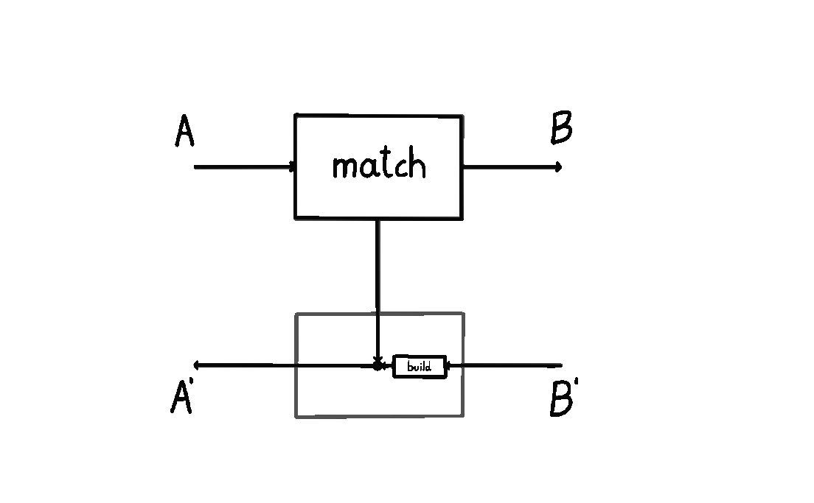
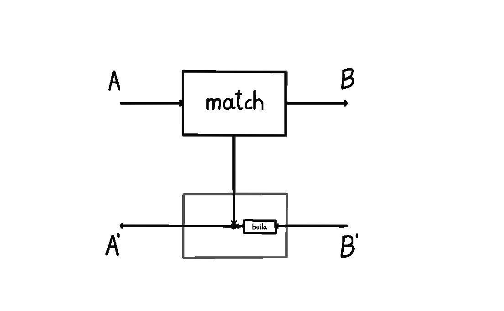

Lenses to the left of me, Prisms to the right
There’s an interesting way to think about lenses and prisms. Lenses model processes that perform internal computation and interact with the environment. Prisms model processes that perform internal computation or interact with the environment. Let me explain what I mean.
A lens  is usually thought of as a pair of maps
is usually thought of as a pair of maps  and
and  . This is the classic presentation of a lens. Instead, here we’ll use the coend representation of which is more symmetric. It’s defined in terms of two maps of type
. This is the classic presentation of a lens. Instead, here we’ll use the coend representation of which is more symmetric. It’s defined in terms of two maps of type  and
and  , meaning forward and backward, respectively. For any lens defined in terms of
, meaning forward and backward, respectively. For any lens defined in terms of  and
and  maps, we can recast it to the coend form: define
maps, we can recast it to the coend form: define  as the composite
as the composite  , while
, while  . This is the representation of lens as an optic, and it makes explicit the fact that the forward part of the lens saves an internal state of type
. This is the representation of lens as an optic, and it makes explicit the fact that the forward part of the lens saves an internal state of type  . In the image below, the forward map
. In the image below, the forward map  is the gray box and the internal state is drawn as the vertical wire (this is also called the “residual”). The dot is the copy map
is the gray box and the internal state is drawn as the vertical wire (this is also called the “residual”). The dot is the copy map  .
.
We can imagine a particle flowing in this lens, as an input of type  . A lens takes in this input and does two things in parallel in the forward pass: it copies it down on the vertical wire (residual/internal state) and it also uses the map
. A lens takes in this input and does two things in parallel in the forward pass: it copies it down on the vertical wire (residual/internal state) and it also uses the map  to turn it into an output
to turn it into an output  . Then, this output
. Then, this output  is turned into a “response”
is turned into a “response”  by the environment (not drawn), and on the backward pass via the
by the environment (not drawn), and on the backward pass via the  map it’s turned back into
map it’s turned back into  . In other words, in this lens we can trace out “two paths” the data flows through starting from
. In other words, in this lens we can trace out “two paths” the data flows through starting from  and ending at
and ending at  : it goes through the residual (which is in this case also of type
: it goes through the residual (which is in this case also of type  ) and it goes through both
) and it goes through both  and
and  .
.
We can think of this as a “conjunctive” data flow: both paths are traversed. The lens computes some internal state and interacts with the environment. This is useful for machine learning (where we want to remember which point we’re differentiating with respect to on the backward pass) and in game theory (where we want to remember the state for which we’re going to receive a payoff for).
A prism, on the other hand, is characterized by a disjunctive data flow. Starting from  , a prism routes the data to go one of two ways: either inside through the residual or outside into the environment through
, a prism routes the data to go one of two ways: either inside through the residual or outside into the environment through  and
and  . We see this animated below.
. We see this animated below.
 
More precisely, a prism is  is a pair of two maps
is a pair of two maps  and
and  . This is the classic presentation of a prism. As we’ll now see, it too has a more symmetric coend representation. It’s defined in the analogous way - in terms of two maps
. This is the classic presentation of a prism. As we’ll now see, it too has a more symmetric coend representation. It’s defined in the analogous way - in terms of two maps  and
and  standing for forward and backward. For any prism defined in terms of
standing for forward and backward. For any prism defined in terms of  and
and  maps, we can recast it to the coend form by setting
maps, we can recast it to the coend form by setting  and setting
and setting  to the composite
to the composite  . In the image below we can see how the prism is an upside-down, mirror image of a lens.
. In the image below we can see how the prism is an upside-down, mirror image of a lens.

We can also imagine a particle flowing through a prism. A prism takes in an input  , checks for some condition, and allows the environment to execute some computation only if that condition is true. This computation is of type
, checks for some condition, and allows the environment to execute some computation only if that condition is true. This computation is of type  . That is, the environment takes in a
. That is, the environment takes in a  that the prism produced and returns a
that the prism produced and returns a  which the prism receives. The prism then has to translate that
which the prism receives. The prism then has to translate that  into an
into an  , i.e. it has to know how to translate the answer from the environment into the type that it would’ve ended up with if the condition had been false.
, i.e. it has to know how to translate the answer from the environment into the type that it would’ve ended up with if the condition had been false.
This shows that that unlike a lens, a prism routes data to one of two ways: either through the residual into  , or through the environment. These two branches of computation are shown as two animations above. For each input of type
, or through the environment. These two branches of computation are shown as two animations above. For each input of type  , only one of them will get executed. Prisms are quite often used in parsing. In game theory, we would use prisms if we want to allow agents to stop playing a game.
, only one of them will get executed. Prisms are quite often used in parsing. In game theory, we would use prisms if we want to allow agents to stop playing a game.
I find this operational perspective of lenses and prisms enlightening. If we think of lenses and prisms as little machines, then lenses are machines that always query the environment as they operate. Prisms, on the other hand, only sometimes query the environment, depending on the values of certain variables in their internals.
Here I am, stuck in an Affine Traversal with you
Can we combine lenses and prisms? Can we model a process that has both disjunctive and conjunctive data flows? The answer is yes, and we get something that’s called an affine traversal. To understand it, let’s go back to the formal definition.
Both lenses and prisms are optics, and optics have a neat coend representation. Given a symmetric monoidal category  , the hom-object of optics is defined as follows:
, the hom-object of optics is defined as follows:
Lenses fall out when  is a cartesian monoidal category, and prisms fall out when
is a cartesian monoidal category, and prisms fall out when  is a cocartesian monoidal category. So how do we compose lenses and prisms?
is a cocartesian monoidal category. So how do we compose lenses and prisms?
Since both are given by some monoidal categories, we’d expect that affine traversals are given by a monoidal category too. But it’s not clear how to compose two monoidal categories. What would we even expect the result to be? As always, understanding what it is that we want to do will lead us to the answer. It’s not the case that we want to treat these as just monoidal categories.
In the above definition, looking at the operator  (which appears twice), its left operand
(which appears twice), its left operand  has different semantics than its right operand. The object
has different semantics than its right operand. The object  is private data of an optic hidden from the outside world, while objects
is private data of an optic hidden from the outside world, while objects  and
and  are “ports” available to the outside world. Even more, if we think about the underlying functor of the monoidal category
are “ports” available to the outside world. Even more, if we think about the underlying functor of the monoidal category  , there’s nothing in the definition of the optics that requires the first argument to be the same as the second. The private information
, there’s nothing in the definition of the optics that requires the first argument to be the same as the second. The private information  can be of different type than
can be of different type than  and
and  which are available to the outside world.
which are available to the outside world.
This brings us to the world of actegories. They have a slick definition. Let  be a monoidal category, and
be a monoidal category, and  just a category. A
just a category. A  -actegory
-actegory  is a strong monoidal functor
is a strong monoidal functor  . Uncurrying
. Uncurrying  we can represent actegories in a more familiar form, as a functor of type
we can represent actegories in a more familiar form, as a functor of type  plus some equations. This looks similar to a monoidal category, and the extra level of generality will be needed to represent affine traversals.
plus some equations. This looks similar to a monoidal category, and the extra level of generality will be needed to represent affine traversals.
An actegory is like a parameterised map. A  -actegory
-actegory  is a map
is a map  parameterised by
parameterised by  . And parameterised maps have a well-defined composition rule. A
. And parameterised maps have a well-defined composition rule. A  parameterised map
parameterised map  and a
and a  -parameterised map
-parameterised map  can be plugged together to obtain a
can be plugged together to obtain a  -parameterised map
-parameterised map  , as animated below.
, as animated below.

Every symmetric monoidal category  is a
is a  -actegory
-actegory  , which means we have a clear way of composing lenses and prisms – as actegories! Let me spell it out.
, which means we have a clear way of composing lenses and prisms – as actegories! Let me spell it out.
A cartesian monoidal category is a  -parameterised map
-parameterised map  . A cocartesian monoidal category is a
. A cocartesian monoidal category is a  -parameterised map
-parameterised map  . Composing them as parameterised maps, we obtain a
. Composing them as parameterised maps, we obtain a  -parameterised map
-parameterised map  . This is a
. This is a  -actegory
-actegory  , i.e. a strong monoidal functor
, i.e. a strong monoidal functor  .1 Fixing some parameters
.1 Fixing some parameters  , what does the resulting functor
, what does the resulting functor  do? It takes some object
do? It takes some object  to
to  . If we unpack the definition of optics for this actegory, we recover the affine traversal defined Profunctor Optics: A Categorical Update(Sec. 3.2.1).
. If we unpack the definition of optics for this actegory, we recover the affine traversal defined Profunctor Optics: A Categorical Update(Sec. 3.2.1).
This seems pretty neat, but what does an affine traversal actually do? Lenses compute an internal state and interact with the environment. Prisms compute an internal state or interact with the environment. Can we interpret an affine traversal in a similar way? The answer is yes. The first thing we have to note is that unlike lenses and prisms, the affine traversal is parameterised by a pair of private objects  . This means that we’ll have a prism-like internal state
. This means that we’ll have a prism-like internal state  and a lens-like internal state
and a lens-like internal state  . Looking at the coend below
. Looking at the coend below
we can see that an affine traversal can do either one, but not both of these things:
- Compute an internal state

- Compute an internal state
 and interact with the environment
and interact with the environment
While technical derivations are available in the aforementioned paper, the high-level intuitions I presented here don’t seem to be. I find them useful, since they give an operational view of the affine traversal. We can also easily see how to recover prisms (by setting  ) and lenses (by setting
) and lenses (by setting  ).
).
Conclusions
It’s been known for a while that affine traversals arise as compositions of lenses and prisms. What I couldn’t find in the literature was the definition of this composition operator, as well as a more detailed operational view. Thinking about lenses and prisms as models of processes that either make us query the environment, or allow us to query the environment was enlightening to me, and my key to understanding affine traversals.
This unlocks more questions. All optics in Profunctor Optics: A Categorical Update are defined using actegories, and actegories can be composed. Can we use this method to come up with new types of optics? In this blog post we talked about the affine traversal, but can we recover the traversal as a limit of some infinite sequence of composition? Are there some even more exotic types of optics, other than kaleidoscopes, glasses and grates?
And lastly, it’s well known that lenses can be used to help us model all sorts of interaction protocols (1, 2, 3). But prisms, affine traversals, and the rest of the optical gadgets are not as well studied in categorical machine learning nor categorical game theory. There’s a large class of important systems that can’t be described with just lenses: systems with power to choose whether to execute some code or not.
Thanks to Ieva Čepaitė and David Orion Girardo for a read-through of this post.
While we can easily obtain the functor
![AF : \mathcal{C} \times \mathcal{C} \to [\mathcal{C}, \mathcal{C}]]() , showing it is strong monoidal will require a distributive law between the two underlying actegories.↩
, showing it is strong monoidal will require a distributive law between the two underlying actegories.↩